Tema 1 Estimació puntual
1.1 Definicions bàsiques
Una població és un conjunt d’individus o objectes sobre el que volem obtenir informació.
Una mostra de mida \(n\) d’una població és simplement un conjunt de \(n\) individus (possiblement repetits) de la població.
Una mostra aleatòria simple de mida \(n\) d’una població s’obté repetint \(n\) vegades, cada una de manera independent de les altres, el procés d’escollir equiprobablement un individu de la població; els individus triats es poden repetir. D’aquesta manera, totes les mostres possibles de \(n\) individus (possiblement repetits: en diem multiconjunts) tenen la mateixa probabilitat d’obtenir-se.
Un estimador (puntual) o estadístic és una funció que aplicada a una mostra d’una població dóna un valor que ens permet estimar alguna cosa que vulguem saber de tota la població.
Exemple 1.1 Si escollim a l’atzar, un rere l’altre i permetent que es repeteixin, 30 estudiants de la UIB i mesuram les seves alçades, obtenim una mostra aleatòria simple de mida 30 d’alçades de la població formada pels estudiants de la UIB. Si llavors calculam la mitjana aritmètica d’aquestes alçades amb l’objectiu d’estimar la mitjana de les alçades de tots els estudiants de la UIB, aquesta mitjana aritmètica és un estimador.
Formalment:
Una població és un conjunt on està definida una variable aleatòria \(X\).
Una mostra aleatòria simple de mida \(n\) de la variable aleatòria \(X\) és un vector \((X_1,\ldots,X_n)\) format per \(n\) còpies independents de \(X\).
Una realització de la mostra aleatòria simple \((X_1,\ldots,X_n)\) és un vector \((x_1,\ldots,x_n)\) de valors presos per aquestes variables aleatòries.
Un estimador és una variable aleatòria \(f(X_1,\ldots,X_n)\) obtinguda aplicant una funció \(f\) a una mostra aleatòria simple \(X_1,\ldots,X_n\).
Aquest estimador s’aplica a les realitzacions de la mostra i dóna nombres reals. Com que és una variable aleatòria, té distribució (en diem la distribució mostral de l’estimador), esperança, desviació típica (en diem l’error estàndard, o típic, de l’estimador), etc.
Exemple 1.2 Podem formalitzar l’Exemple 1.1 de la manera següent:
Població: El conjunt dels estudiants de la UIB
Variable aleatòria \(X\): Prenem un estudiant de la UIB i midam la seva alçada.
Mostra aleatòria simple de mida 30: Un vector \((X_1,\ldots,X_{30})\) format per 30 còpies independents de \(X\).
Una realització d’aquesta mostra aleatòria simple: Un vector \((x_1,\ldots,x_{30})\) obtingut repetint 30 vegades, de manera independent cada una de les altres, el procés d’escollir un estudiant de la UIB i midar-li l’alçada
Estimador: La mitjana aritmètica que farem servir sobre aquesta mostra és \[ \overline{X}=\frac{X_1+\cdots+X_{30}}{30} \] i sobre la realització concreta obtinguda pren el valor \[ \overline{x}=\frac{x_1+\cdots+x_{30}}{30} \]
A partir d’ara, quan no hi hagi necessitat de filar prim, cometrem l’abús de llenguatge de dir mostra aleatòria simple tant al vector de variables aleatòries \((X_1,\ldots,X_n)\) com a una realització \((x_1,\ldots,x_n)\in \mathbb{R}^n\); i hi ometrem els parèntesis.
A la vida real, les mostres aleatòries se solen prendre sense repeticions (sense reposició). No són mostres aleatòries simples, però:
Si la mida \(N\) de la població és MOLT més gran que la mida \(n\) de la mostra, els resultats per a mostres aleatòries simples valen (aproximadament) en aquest cas, perquè les repeticions són improbables i les variables aleatòries que formen la mostra són gairebé idèntiques i independents. Més en concret, si la població és MOLT gran (per exemple de 106 individus), excloure, per evitar repeticions, uns pocs individus ja escollits (per exemple, 9) no canvia gaire la probabilitat d’escollir un individu dels que queden: abans d’eliminar els 9 ja escollits, la probabilitat de triar un individu concret era \(1/10^6=10^{-6}\) i després d’excloure’ls és \(1/999991=1.000009\times 10^{-6}\).
Observau també que si prenem una mostra aleatòria sense repeticions d’una població molt gran, gairebé és com si hagués estat presa permetent repeticions, perquè per molt que les permetíssim, seria molt improbable que es donassin. Tornant al nostre exemple, si prenem una mostra aleatòria simple (permetent repeticions) de 10 individus d’una població de 106 individus, la probabilitat que escollim qualque individu més d’una vegada és \[ 1-\frac{10^6(10^6-1)\cdots (10^6-9)}{(10^6)^{10}}=4.5\times 10^{-5}. \] Molt petita. Per tant, si ens trobam al davant d’una mostra aleatòria de 10 individus d’aquesta població escollida sense permetre repeticions, ens podem creure perfectament que l’hem obtinguda permetent repeticions i que simplement no n’hi ha hagut cap.
Per tant:
quan N és MOLT més gran que n, cometrem l’abús de llenguatge de també dir que tenim una mostra aleatòria simple.
Quan \(n\) és relativament gran per comparació amb \(N\), ja és mal de creure que una mostra sense repeticions hagi estat escollida permetent-les. Per exemple, si prenem una mostra aleatòria simple (permetent repeticions) de 10 individus d’una població de 100 individus, la probabilitat que escollim qualque individu més d’una vegada és \[ 1-\frac{100\cdot 99\cdots 91}{100^{10}}=0.37. \] Més d’una de cada 3 mostres aleatòries simples de 10 individus d’una població de 100 individus contenen qualque repetició, per tant no podem acceptar amb els ulls clucs que si no tenim cap repetició, les hàgim permeses.
Exemple 1.3 Recordau que si una població té \(N\) individus, la probabilitat que una mostra aleatòria simple de mida \(n\) tingui tots els seus membres diferents és \[ \frac{N(N-1)\cdots (N-n+1)}{N^n} \]
Per exemple, la UIB té uns 12000 estudiants. El gràfic següent mostra la probabilitat que si prenem una mostra aleatòria simple de \(n\) estudiants de la UIB, siguin tots diferents, en funció de \(n\):
f=function(N,i){prod((N:(N-i+1))/N)}
prob=sapply(1:200,f,N=1200)
plot(1:200,prob,type="l",lwd=2,xlab="n",ylab="probabilitat",
xaxp=c(0,200,20),yaxp=c(0,1,10))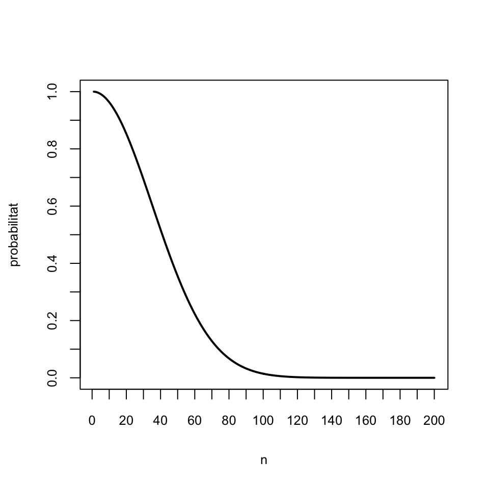
El gràfic següent mostra la mida màxima \(n\) d’una mostra aleatòria simple extreta d’una població de mida \(N\) per què la probabilitat de repeticions sigui menor que 0.05, en funció de \(N\)
h=function(n){max(which(sapply(1:(n/50),f,N=n)>0.95))}
fites=sapply(500+100*(0:150),h)
plot(500+100*(0:150),fites,pch=20,xlab="N",ylab="n",xaxp=c(500,15500,30))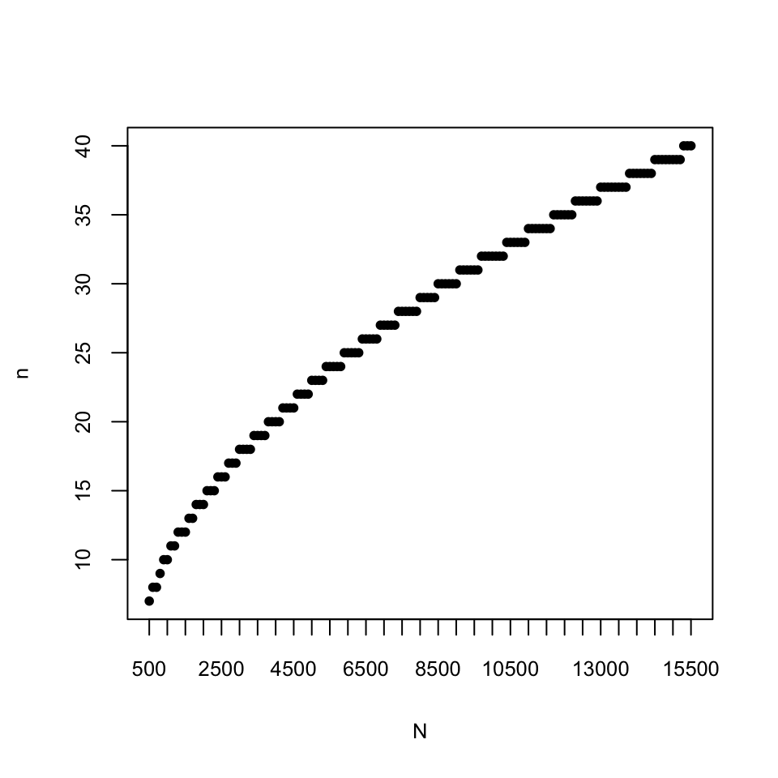
A la pràctica, en realitat (gairebé) mai no disposarem d’una mostra aleatòria. Ens haurem de conformar amb una mostra oportunista (o de conveniència}: la que poguem obtenir. Heu de tenir clar que, en principi, els resultats que donarem NO són vàlids en aquest cas, però si no tenim res millor… El que es fa aleshores és explicar amb detall com s’ha obtingut la mostra i descriure amb detall les seves característiques, a fi que altres investigadors puguin decidir si els individus “són típics” i podrien passar per una mostra aleatòria, i si poden extrapolar les estimacions al seu context.
Per exemple, si per saber l’opinió dels estudiants de Biologia espanyols sobre un tema, ho deman als meus estudiants, serà una mostra clarament oportunista i caldrà llavors esbrinar si podria passar per una mostra aleatòria simple a efectes de l’estudi que vull portar a terme.
Els estimadors tenen sempre sentit per a mostres en general, però gairebé tots els teoremes que estableixen les seves propietats són vertaders només sota determinades restriccions (mostra aleatòria simple, condicions extra sobre \(X\), …), per la qual cosa les seves conseqüències tan sols són segures sota aquestes restriccions.
1.2 Mitjana mostral
La mitjana mostral \(\overline{X}\) d’una mostra aleatòria de mida \(n\) d’una variable aleatòria \(X\) és simplement la seva mitjana artimètica.
Formalment, la mitjana mostral és una variable aleatòria obtinguda prenent \(n\) còpies \(X_1,\ldots,X_n\) de la variable aleatòria \(X\) i calculant \[ \overline{X}=\frac{X_1+\cdots+X_n}{n} \]
Com a conseqüència del Teorema ., tenim el següent:
Teorema 1.1 Siguin \(X\) una variable aleatòria d’esperança \(\mu_X\) i desviació típica \(\sigma_X\), \(X_1,\ldots,X_n\) una mostra aleatòria de \(X\) i \(\overline{X}\) la seva mitjana mostral. Aleshores
El valor esperat de \(\overline{X}\) és \(E(\overline{X})=\mu_X\).
- Si la mostra aleatòria és simple, l’error estàndard o típic de \(\overline{X}\) (la desviació típica de \(\overline{X}\)) és \(\sigma(\overline{X})={\sigma_X}/{\sqrt{n}}\).
Per tant:
\(\overline{X}\) és un estimador puntual de \(\mu_X\).
\(E(\overline{X})=\mu_X\) (esperam que la mitjana mostral doni \(\mu_X\)) significa que si repetíssim moltes vegades el procés de prendre una mostra aleatòria simple de mida \(n\) i calcular-ne la mitjana mostral, molt probablement el valor mitjà d’aquestes mitjanes s’acostaria molt a \(\mu_X\).
\(\sigma(\overline{X})= \sigma_X/\sqrt{n}\) indica que la variabilitat dels resultats de \(\overline{X}\) creix amb la variabilitat de \(X\) i decreix amb la mida \(n\) de la mostra, tendint a 0 quan \(n\to\infty\)
Exemple 1.4 El fitxer tests.txt que trobareu a l’Aula Digital conté les notes (sobre 100) de tests dels estudiants de Matemàtiques I de fa uns cursos.
tests=scan("tests.txt")La seva mitjana és
mean(tests)## [1] 55.43243Si en prenem una mostra aleatòria simple, per exemple de mida 40, la seva mitjana mostral no té perquè coincidir amb la mitjana poblacional:
MAS=sample(tests,40,replace=TRUE)
mean(MAS)## [1] 53.5Però si prenem moltes mostres aleatòries simples, la mitjana de les seves mitjanes és molt probable que sí que s’acosti a la mitjana poblacional:
mitjanes=replicate(10^5,mean(sample(tests,40,replace=TRUE)))
mean(mitjanes)## [1] 55.4187Vegem ara que la desviació típica d’aquesta mostra de mitjanes s’acosta a l’error típic de la mitjana mostral, no a la desviació típica de la població:
sd(mitjanes)## [1] 3.384683sd(tests)## [1] 21.44044sd(tests)/sqrt(40)## [1] 3.390031Recordau del Teorema . que una combinació lineal de variables aleatòries normals independents torna a ser normal. Com que la mitjana mostral d’una mostra aleatòria simple és una combinació lineal de variables aleatòries independents, obtenim el resultat següent:
El Teorema Central del Límit diu que la conclusió del teorema anterior és aproximadament vertadera si la mida \(n\) de les mostres aleatòries simples és gran:
Teorema 1.3 (Teorema Central del Límit) Sigui \(X_1,\ldots, X_n\) una mostra aleatòria simple d’una variable aleatòria \(X\) qualsevol d’esperança \(\mu_X\) i desviació típica \(\sigma_X\). Quan \(n\to \infty\), la distribució de probabilitats de \(\overline{X}\) tendeix a la d’una \[ N\Big(\mu_X,\frac{\sigma_X}{\sqrt{n}}\Big) \] i per tant la distribució de probabilitats de \[ Z=\frac{\overline{X}-\mu_X}{{\sigma_X}/{\sqrt{n}}} \] tendeix a la d’una variable normal estàndard \(N(0,1)\).
Exemple 1.6 Tornem a la situació de l’Exemple 1.4. Teníem les notes guardades en un vector anomenat tests. Amb l’histograma següent podem veure que aquestes notes no tenen pinta de seguir una distribució normal.
fact.trans=hist(tests,plot=FALSE)$counts[1]/hist(tests,plot=FALSE)$density[1]
hist(tests,col="light blue",xlab="Notes dels tests",
ylab="Freqüències",main="Histograma de notes de tests")
curve(fact.trans*dnorm(x,mean(tests),sd(tests)),col="red",lwd=2,add=TRUE)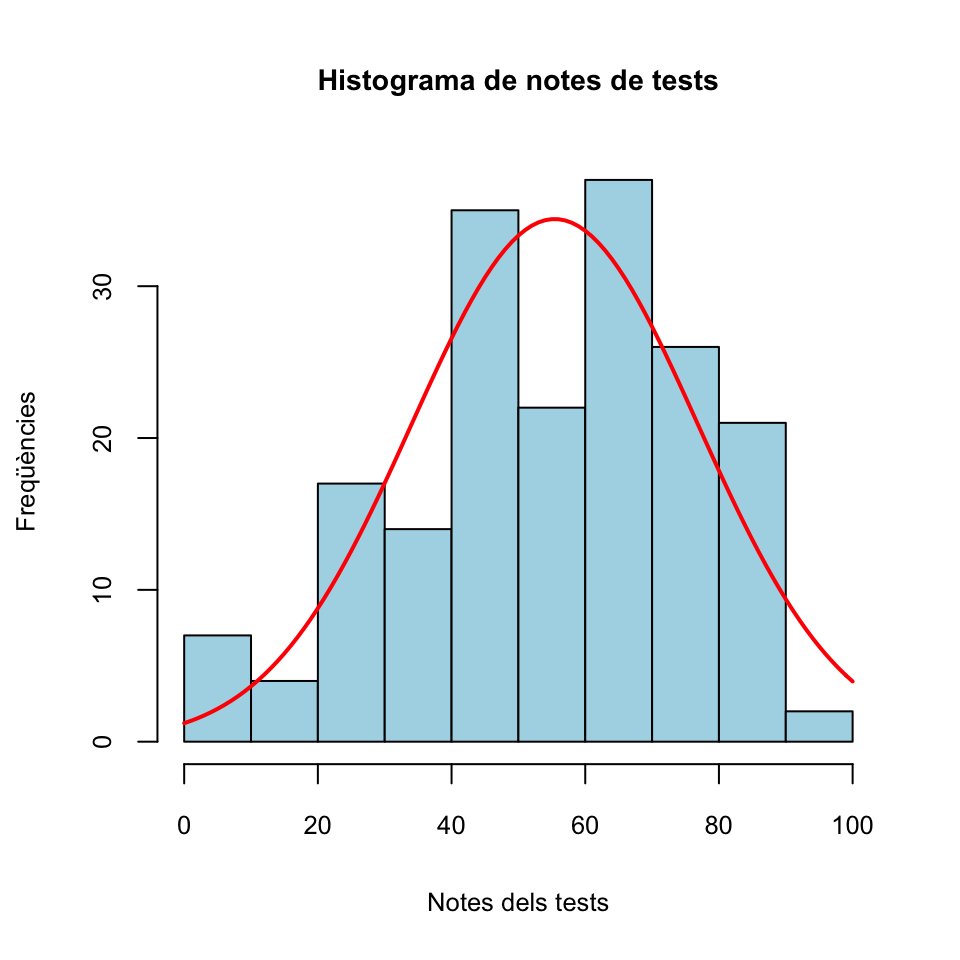
A l’Exemple 1.4 també hem construit un vector anomenat mitjanes format per 105 mitjanes de mostres aleatòries simples de notes de mida 40. Pel Teorema Central del Límit, aquestes mitjanes mostrals haurien de seguir aproximadament una distribució normal, malgrat que la “població original” (les notes dels tests) no sigui normal. Vegem-ho amb un histograma:
fact.trans.m=hist(mitjanes,plot=FALSE)$counts[1]/hist(mitjanes,plot=FALSE)$density[1]
hist(mitjanes,col="light blue",xlab="Mitjanes",
ylab="Freqüències",main="Histograma de la mostra de mitjanes")
curve(fact.trans.m*dnorm(x,mean(mitjanes),sd(mitjanes)),col="red",lwd=2,add=TRUE)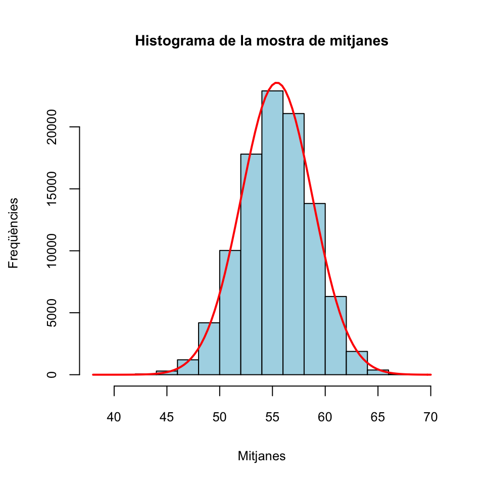
L’exemple següent és un tipus de pregunta que més endavant ens preocuparà molt.
Exemple 1.7 L’alçada d’una espècie de matolls té valor mitjà 115 cm, amb una desviació típica de 25 cm. Si prenem una mostra aleatòria simple de 100 matolls d’aquesta espècie, quina és la probabilitat que la mitjana mostral de les alçades sigui més petita que 110 cm?
Diguem \(X\) a la variable aleatòria definida per les alçades d’aquests matolls. Pel Teorema Central de Límit, la mitjana mostral \(\overline{X}\) de mostres aleatòries simples de 100 alçades segueix una distribució aproximadament \(N(115,25/\sqrt{100})=N(115,2.5)\). Llavors, la probabilitat que ens demanen és \[ P(\overline{X}< 110) \] que podem calcular amb
round(pnorm(110,115,2.5),4)## [1] 0.0228Sigui ara \(X_1,\ldots, X_n\) una mostra aleatòria sense reposició de mida \(n\) d’una variable aleatòria \(X\) d’esperança \(\mu_X\) i desviació típica \(\sigma_X\). Si \(n\) és molt petit en relació a la mida \(N\) de la població, ja hem explicat que podem suposar que aquesta mostra aleatòria és simple i per tant tot funciona com fins ara; en particular, en aquest cas entendrem que els tres teoremes anteriors són vertaders.
Si \(n\) és gran en relació a \(N\), aleshores el resultat per l’esperança segueix essent vertader (al Teorema 1.1.a no suposàvem que la mostra fos simple): \[ E(\overline{X})=\mu_X \] Però ara cal modificar la fórmula del Teorema 1.1.b per a la desviació típica, que ara és: \[ \sigma_{\overline{X}}=\frac{\sigma_X}{\sqrt{n}}\cdot\sqrt{\frac{N-n}{N-1}} \] A més, en aquest cas les conclusions dels Teoremes 1.2 i 1.3 no són certes, ni tan sols amb aquesta correcció de l’error típic.
Al terme \[ \sqrt{\frac{N-n}{N-1}} \] que apareix a la fórmula anterior li diuen el factor de població finita.
Si us en recordau, aquest factor de població finita és el factor que passava de la desviació típica d’una distribució binomial a la d’una hipergeomètrica. En efecte:
Si \(X_B\sim B(n,p)\), \(\sigma^2_{X_B}=np(1-p)\) i per tant \(\sigma_{X_B}=\sqrt{np(1-p)}\)
Si \(X_H\sim H(A,B,n)\), amb \(A+B=N\) i \(p=A/N\),
Prenguem ara 105 mostres aleatòries sense reposició de notes de tests.
mitjanes.norep=replicate(10^5,mean(sample(tests,40)))Un altre cop, la mitjana d’aquest vector de mitjanes hauria de ser propera a la mitjana de la població original, que era 55.43:
round(mean(mitjanes.norep),2)## [1] 55.42Calculem ara la desviació típica d’aquest vector de mitjanes:
round(sd(mitjanes.norep),2)## [1] 3Aquesta desviació típica no s’apropa a la desviació típica de la població partida per l’arrel quadrada de la mida de les mostres, que hem calculat abans i era 3.39. En canvi, pel que acabam d’explicar, la desviació típica d’aquest vector de mitjanes de mostres sense reposició hauria de ser molt propera a la desviació típica de la població partida per l’arrel quadrada de la mida de les mostres i tot multiplicat pel factor de població finita \(\sqrt{(N-n)/(N-1)}\), on \(N\) és la mida de la població, és a dir, la longitud del vector tests, i \(n\) la mida de les mostres, 40. Vegem si és veritat:
round((sd(tests)/sqrt(40))*sqrt((length(tests)-40)/(length(tests)-1)),2)## [1] 3.011.3 Proporció mostral
Sigui \(X\) una variable aleatòria Bernoulli amb probabilitat d’èxit (o proporció d’èxits) \(p_X\). Entendrem que \(X\) pren els valors 1 (èxit) o 0 (fracàs).
Sigui \(X_1,\ldots,X_n\) una mostra aleatòria de mida \(n\) de \(X\). Sigui \(S=\sum_{i=1}^n X_i\) el nombre d’èxits observats en aquesta mostra aleatòria.
La proporció mostral d’èxits de la nostra mostra és \[ \widehat{p}_X=\frac{S}{n}=\frac{\sum_{i=1}^n X_i}{n}. \] Fixau-vos que \(\widehat{p}_X\) és un cas particular de la mitjana mostral \(\overline{X}\), per tant per a les proporcion mostrals val tot el que hem dit fins ara per a mitjanes mostrals:
Teorema 1.4 Si \(X\) és una variable aleatòria Bernoulli amb probabilitat d’èxit \(p_X\), aleshores
\(E(\widehat{p}_X)=p_X\)
Si la mostra aleatòria és simple, \(\sigma({\widehat{p}_X})=\sqrt{\dfrac{p_X(1-p_X)}{n}}\)
Si la mostra aleatòria és sense reposició i \(n\) és relativament gran per comparació amb la mida de la població \(N\), \[ \sigma({\widehat{p}_X})=\sqrt{\frac{p_X(1-p_X)}{n}}\cdot \sqrt{\frac{N-n}{N-1}} \]
- Pel Teorema Central del Límit, quan prenem mostres aleatòries simples de mida \(n\) gran, la distribució de \(\widehat{p}_X\) és aproximadament la d’una variable \[ N\left({p}_X,\sqrt{\frac{{p}_X(1-{p}_X)}{n}}\right) \] i per tant \[ \frac{\widehat{p}_X-p_X}{\sqrt{\frac{{p}_X(1-{p}_X)}{n}}} \] és aproximadament \(N(0,1)\).
Alguns comentaris:
\(E(\widehat{p}_X)=p_X\): Si repetíssim moltes vegades el procés de prendre una mostra aleatòria simple de mida \(n\) d’una variable aleatòria de Bernoulli \(X\) i calcular-ne la proporció mostral d’èxits, molt probablement la mitjana d’aquestes proporcions mostrals s’acostaria molt a \(p_X\).
En particular, \(\widehat{p}_X\) serveix per estimar \(p_X\)
\(\sigma(\widehat{p}_X)= \sqrt{{p_X(1-p_X)}/{n}}\): la variabilitat dels resultats de \(\widehat{p}_X\) decreix amb \(n\) i tendeix a 0 quan \(n\to \infty\)
\(\sqrt{{p_X(1-p_X)}/{n}}\) és l’error típic de \(\widehat{p}_X\). L’estimam amb l’error típic de l’estimació \(\sqrt{{\widehat{p}_X(1-\widehat{p}_X)}/{n}}\).
A partir d’ara, sovint cometrem l’abús de llenguatge d’ometre l’adverbi “aproximadament” de l’apartat (4) del teorema anterior, i direm simplement que si \(n\) és gran, \(\widehat{p}_X\) és normal. Però hem de recordar que aquest “és normal” en realitat vol dir “la seva distribució és aproximadament la d’una variable normal”.
Exemple 1.9 Tornem una altra vegada a la situació dels Exemples 1.4 i 1.6. Vaig a traduir el fitxer de notes de tests en un vector binari: 0 per suspens (haver tret menys de 50) i 1 per aprovat (haver tret 50 o més):
aprovs=rep(1,length(tests)) # Iniciam totes les notes a 1
aprovs[which(tests<50)]=0 # Posam 0 on la nota del test és suspesaAquest vector aprovs el podem entendre com una població de Bernoulli de probabilitat poblacional d’èxit (aprovat) \(p_X\). Les proporcions de suspesos i aprovats són:
round(prop.table(table(aprovs)),4) ## aprovs
## 0 1
## 0.4054 0.5946Per tant, \(p_X\) és donada per:
p_X=as.numeric(prop.table(table(aprovs))[2])
round(p_X,4)## [1] 0.5946Ara n’extreurem 105 mostres aleatòries simples de mida 40, en calcularem les proporcions mostrals d’aprovats i comprovarem si es confirmen les conclusions del teorema anterior.
set.seed(100)
props.mostrals=replicate(10^5,mean(sample(aprovs,40,rep=TRUE)))La mitjana d’aquest vector de proporcions hauria de ser propera a la proporció poblacional d’aprovats \(p_X=0.5946\).
round(mean(props.mostrals),4)## [1] 0.5942Vegem ara la seva desviació típica:
round(sd(props.mostrals),4)## [1] 0.0774Per teoria, sabem que això hauria de ser proper a \(\sqrt{p_X(1-p_X)/n}\)
round(sqrt(p_X*(1-p_X)/40),4)## [1] 0.0776I pel Teorema Central del Límit, aquestes proporcions mostrals haurien de seguir aproximadament una distribució normal. Vegem-ho amb un histograma:
fact.trans.p=hist(props.mostrals,plot=FALSE)$counts[1]/hist(props.mostrals,plot=FALSE)$density[1]
hist(props.mostrals,col="light blue",xlab="Proporcions mostrals",
ylab="Freqüències",main="Histograma de la mostra de proporcions")
curve(fact.trans.p*dnorm(x,mean(props.mostrals),sd(props.mostrals)),col="red",lwd=2,add=TRUE)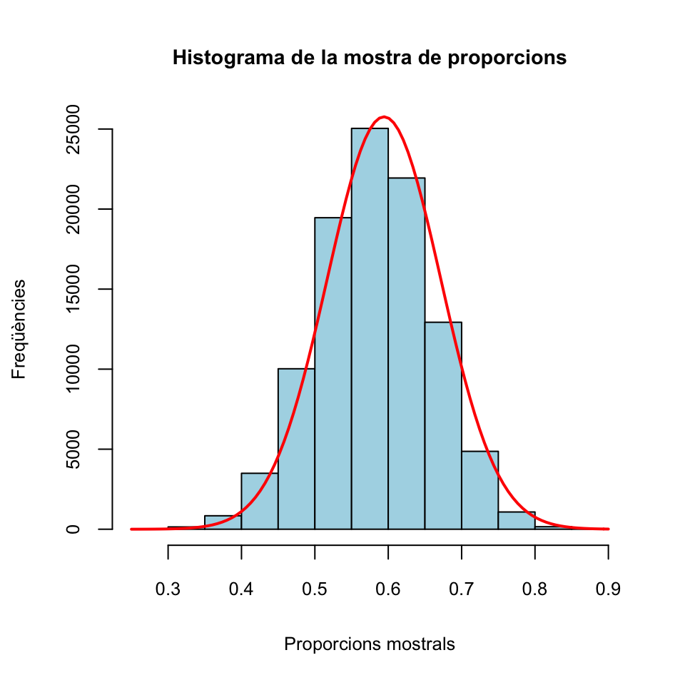
I això que la mida de les mostres, 40, no és especialment gran.
Aquesta pregunta, que serà molt típica d’aquí a pocs temes, la traduïm en la següent pregunta:
Si prenem una mostra aleatòria simple de 60 estudiants, quina és la probabilitat que la proporció mostral de dones sigui superior al 66.67%?
Una manera senzilla de respondre aquesta pregunta és aprofitar el Teorema Central del Límit, segons el qual la proporció mostral \(\widehat{p}_X\) de dones en mostres aleatòries simples de 60 estudiants de la UIB segueix una distribució aproximadament normal amb \(\mu=0.591\) i \[ \sigma=\sqrt{\dfrac{0.591(1-0.591)}{60}}=0.0635 \] Per tant, la probabilitat que \(\widehat{p}_X\geqslant 0.6667\) és (recordau, aproximadament)
round(1-pnorm(0.6667,0.591,0.0635),4)## [1] 0.1166Naturalment, si tenim R o qualsevol altra manera de calcular probabilitats, també podem fer servir la distribució binomial per calcular aquesta probabilitat, i de fet és més correcte, ja que la probabilitat anterior ha emprat una aproximació de la distribució de \(\widehat{p}_X\) i en canvi sabem que el nombre de dones en mostres aleatòries simples de 60 estudiants de la UIB segueix una distribució binomial \(B(60,0.591)\) i com que el 66.67% de la pregunta en realitat representa 40 dones, la probabilitat exacta demanada és
round(1-pbinom(39,60,0.591),4)## [1] 0.1441(Recordau que si \(X\) és una variable aleatòria discreta que pren valors enters, com ara la binomial, \(P(X\geqslant 40)=1-P(X\leqslant 39)\).)
1.4 Variància mostral
Sigui \(X_1,\ldots, X_n\) una mostra aleatòria simple de mida \(n\) d’una variable aleatòria \(X\) d’esperança \(\mu_X\) i desviació típica \(\sigma_X\).
La variància mostral d’aquesta mostra aleatòria simple és \[ \widetilde{S}_{X}^2=\frac{\sum_{i=1}^n (X_{i}-\overline{X})^2}{n-1} \] La seva desviació típica mostral és \[ \widetilde{S}_{X}=+\sqrt{\widetilde{S}_{X}^2} \] A més, de tant en tant també farem servir la variància i la desviació típica vertaderes: \[ \begin{array}{l} \displaystyle S^2_{X}=\frac{\sum_{i=1}^n (X_{i}-\overline{X})^2}{n}=\frac{(n-1)}{n}\widetilde{S}^2_{X}\\ \displaystyle S_X=+\sqrt{S_X^2} \end{array} \]
La variància vertadera admet la següent expressió senzilla: \[ S^2_X=\frac{\sum_{i=1}^n X_{i}^2}{n}-\overline{X}^2 \]
En efecte: \[ \begin{array}{l} \displaystyle \frac{\sum_{i=1}^n (X_{i}-\overline{X})^2}{n}=\frac{1}{n}\sum_{i=1}^n (X_{i}^2-2\overline{X}X_i+\overline{X}^2)\\ \displaystyle\qquad = \frac{1}{n}\Big(\sum_{i=1}^n X_{i}^2-2\overline{X}\sum_{i=1}^n X_{i}+n\overline{X}^2\Big)\\ \displaystyle\qquad =\frac{\sum_{i=1}^n X_{i}^2}{n}-2\overline{X}\frac{\sum_{i=1}^n X_{i}}{n}+\frac{n\overline{X}^2}{n}\\ \displaystyle\qquad =\frac{\sum_{i=1}^n X_{i}^2}{n}-2\overline{X}\cdot\overline{X} + \overline{X}^2=\frac{\sum_{i=1}^n X_{i}^2}{n}- \overline{X}^2 \end{array} \]
Teorema 1.5 Si la variable aleatòria \(X\) és normal, aleshores \(E(\widetilde{S}_{X}^2)=\sigma_{X}^2\) i la variable aleatòria \[ \frac{(n-1)\widetilde{S}_{X}^2}{\sigma_{X}^2} \] té distribució coneguda: \(\chi_{n-1}^2\) (llegit ``khi quadrat amb \(n-1\) graus de llibertat).
De la distribució \(\chi_n^2\) (\(\chi\): en català, khi; en castellà, ji; en anglès, chi, pronunciat xai), on \(n\) són els graus de llibertat, heu de saber que:
Per definició, és la distribució de la suma dels quadrats de \(n\) variables aleatòries normals estàndard independents. És a dir, si \(Z_{1},Z_{2},\ldots, Z_{n}\sim N(0,1)\) són independents, la variable \[ Z_{1}^{2}+Z_{2}^{2}+\cdots +Z_{n}^{2} \] té distribució \(\chi_n^2\).
La \(n\) és un paràmetre del que depèn la seva distribució.
Amb R és
chisqSi \(X\) és una variable aleatòria amb distribució \(\chi_n^2\), aleshores \(E(X)=n\) i \(\sigma_X^2=2 n\)
Per a \(n\) petits, la distribució d’una \(\chi_{n}^2\) presenta una cua a la dreta, i a mida que \(n\) creix, es va aproximant a una distribució normal \(N(n,\sqrt{2n})\), com podeu veure als gràfics següents
curve(dchisq(x,1),col=1,lwd=2,xlim=c(0,20),xlab="",ylab="",ylim=c(0,0.3),main="Algunes khi quadrat")
curve(dchisq(x,2),col=2,lwd=2,add=TRUE)
curve(dchisq(x,3),col=3,lwd=2,add=TRUE)
curve(dchisq(x,4),col=4,lwd=2,add=TRUE)
curve(dchisq(x,5),col=5,lwd=2,add=TRUE)
curve(dchisq(x,10),col=6,lwd=2,add=TRUE)
legend("topright",col=1:6,lty=c(1,1),
lwd=c(2,2),legend=paste("n=",c(1:5,10),sep=""),cex=0.8)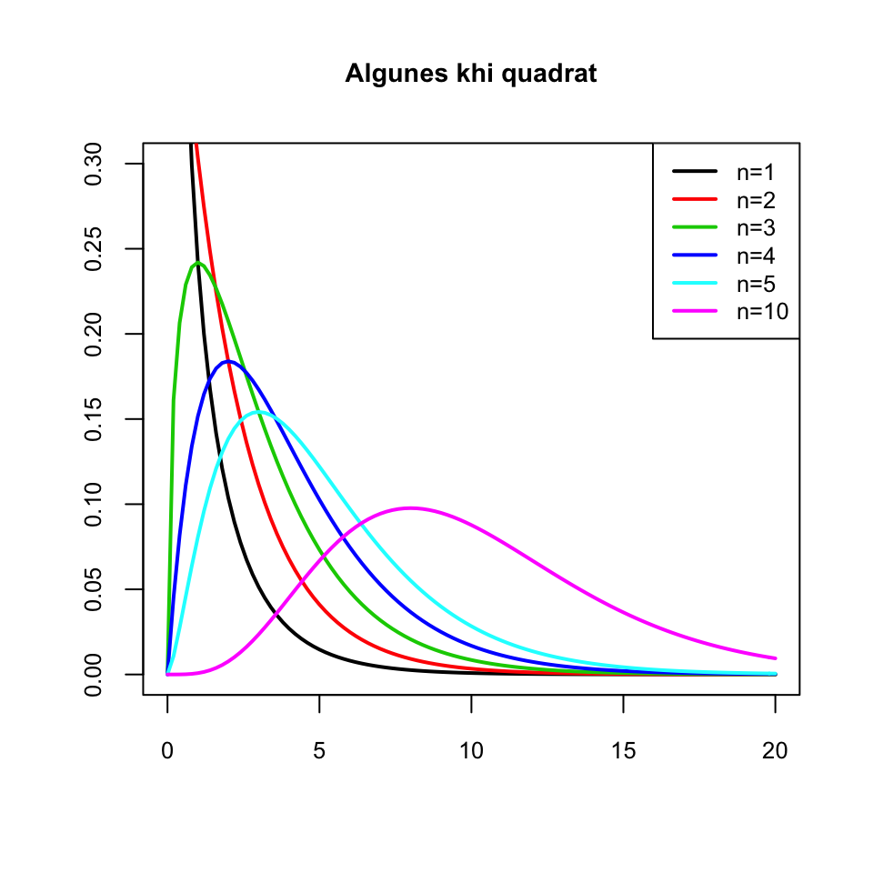
curve(dchisq(x,300),xlim=c(150,450),lwd=2,xlab="",ylab="",main="Khi quadrat vs Normal")
curve(dnorm(x,300,sqrt(600)),lwd=2,col="red",add=TRUE)
legend("topleft",col=c("black","red"),lty=c(1,1),
lwd=c(2,2),legend=c("Khi quadrat amb n=300","Normal"),cex=0.7)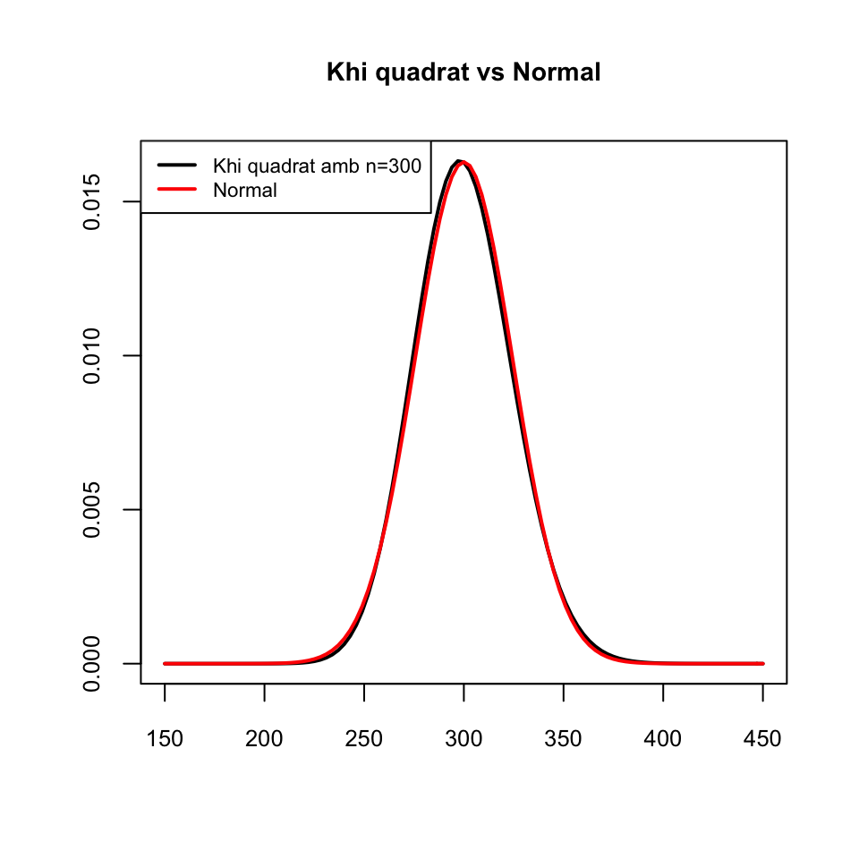
Tornem un instant a això dels graus de llibertat. Per què diem que la variància (mostral) té \(n-1\) graus de llibertat?
Doncs perquè si volem construir un conjunt de \(n\) nombres \(x_1,\ldots,x_n\) que tenguin variància un valor donat, posem \(y_0\), aleshores podem escollir \(n-1\) d’ells, diguem \(x_1,\ldots,x_{n-1}\), com volguem i aleshores el darrer, \(x_n\), queda bastant fixat. En matemàtiques això se sol expressar dient que
tenim \(n-1\) graus de llibertat a l’hora d’escollir \(x_1,\ldots,x_n\) amb variància fixada \(y_0\).
1.5 La t de Student
Tornem a les mitjanes mostrals de variables normals.
Teorema 1.6 Sigui \(X\) una variable \(N(\mu_X,\sigma_X)\) i sigui \(X_1,\ldots,X_n\) una mostra aleatòria simple de \(X\), amb mitjana \(\overline{X}\) i desviació típica mostral \(\widetilde{S}_{X}\). Aleshores, la variable aleatòria \[ T=\frac{\overline{X}-\mu_X}{\widetilde{S}_{X}/\sqrt{n}} \] segueix una distribució coneguda, anomenada t de Student amb \(n-1\) graus de llibertat, \(t_{n-1}\).
A \(\widetilde{S}_{X}/\sqrt{n}\) li diem l’error típic, o estàndard, de la mostra: estima l’error estàndard \(\sigma_X/\sqrt{n}\) de \(\overline{X}\).
De la distribució t de Student amb \(n\) graus de llibertat, \(t_{n}\), heu de saber que:
Amb R és
tSi \(T_{n}\) és una variable amb distribució \(t_{n}\), aleshores \(E(T_{n})=0\) si \(n\geqslant 2\) i \(\sigma_{T_{n}}^2=n/(n-2)\) si \(n\geqslant 3\)
La funció de densitat d’una variable \(T_{n}\) amb distribució \(t_{n}\) és simètrica al voltant de 0 (com la d’una \(N(0,1)\)): \[ P(T_{n}\leqslant-x)=P(T_{n}\geqslant x)=1-P(T_{n}\leqslant x) \]
Si \(n\) és gran, la distribució d’una variable \(T_{n}\) amb distribució \(t_{n}\) és aproximadament la de \(N(0,1)\) (però amb més variància: un poc més aplatada), com podeu veure als gràfics següents:
curve(dnorm(x),col=1,lwd=2,xlim=c(-4,4),xlab="",ylab="",ylim=c(0,0.4),
main="Algunes t de Student")
curve(dt(x,2),col=2,lwd=2,add=TRUE)
curve(dt(x,3),col=3,lwd=2,add=TRUE)
curve(dt(x,4),col=4,lwd=2,add=TRUE)
curve(dt(x,5),col=5,lwd=2,add=TRUE)
curve(dt(x,10),col=6,lwd=2,add=TRUE)
legend("topleft",col=1:6,lty=rep(1,6), lwd=rep(2,6),
legend=c("Normal estàndard", paste("Student amb g.l.=",c(2:5,10),sep="")),cex=0.7)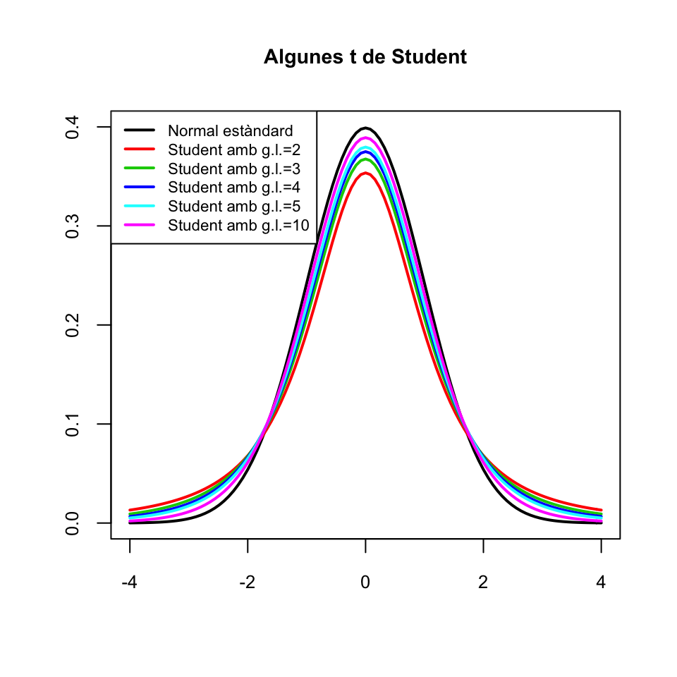
curve(dnorm(x),col=1,lwd=2,xlim=c(-4,4),xlab="",ylab="",ylim=c(0,0.4),
main="t vs Normal estàndard")
curve(dt(x,50),col=2,lwd=2,add=TRUE)
legend("topleft",col=1:2,lty=rep(1,2), lwd=rep(2,2),
legend=c("Normal estàndard", "Student amb g.l.=50"),cex=0.7)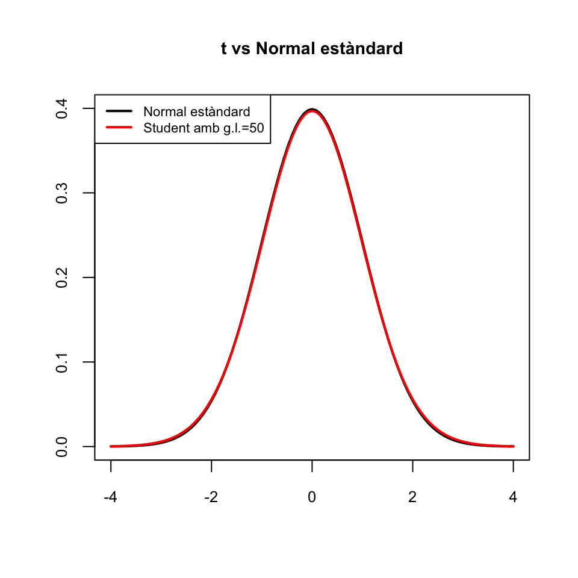
Indicarem amb \(t_{n,q}\) el \(q\)-quantil d’una variable aleatòria \(T_{n}\) que segueix una distribució \(t_n\). És a dir, \(t_{n,q}\) és el valor tal que \[ P(T_{n}\leqslant t_{n,q})=q \] Per la simetria de la distribució \(t_n\), \[ t_{n,q}=-t_{n,1-q}. \]
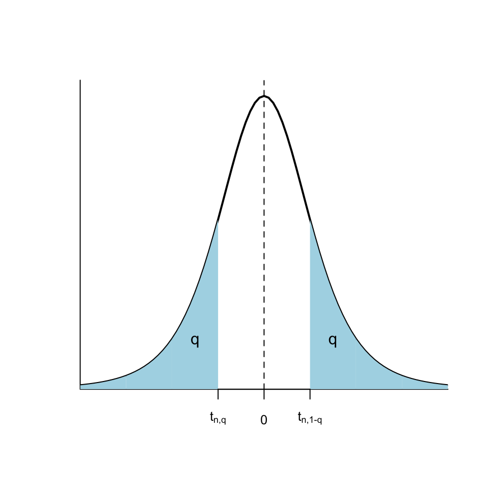
Hi ha algunes propietats dels quantils de la t de Student que heu de saber:
\(t_{n ,q}\approx z_{q}\) si \(n\) és molt gran, posem \(n \geqslant 200\)
\(t_{n,0.95}\) (per a \(n\geqslant 10\)) està entre 1.64 i 1.8; ho aproximarem \(t_{n,0.95}\approx 1.7\)
\(t_{n,0.975}\) (per a \(n\geqslant 10\)) està entre 1.96 i 2.2; ho aproximarem \(t_{n,0.95}\approx 2\)
Abans de tancar aquesta secció, recordau que no heu de confondre:
Desviació típica (o estàndard) d’una variable aleatòria: El paràmetre poblacional, normalment desconegut
Desviació típica (o estàndard) (sigui mostral o vertadera) d’una mostra: L’estadístic que calculam sobre la mostra i que quantifica la variabilitat de la mostra
Error típic (o estàndard) d’un estimador: La desviació típica de la variable aleatòria que defineix l’estimador, normalment desconeguda
- Error típic (o estàndard) d’una mostra: Estimació de l’error típic de la mitjana mostral (o de la proporció mostral) a partir d’una mostra; servirà per calcular intervals de confiança. És la desviació típica mostral dividida per \(\sqrt{n}\).
1.6 “Bons” estimadors
1.6.1 Estimadors no esbiaixats
Un estimador puntual \(\widehat{\theta}\) d’un paràmetre poblacional \(\theta\) és no esbiaixat quan el seu valor esperat és precisament el valor poblacional del paràmetre, és a dir, quan \[ E(\widehat{\theta})=\theta \] Es diu aleshores que l’estimació puntual és no esbiaixada.
El biaix d’un estimador \(\widehat{\theta}\) d’un paràmetre \(\theta\) és la diferència \(E(\widehat{\theta})-\theta\)
Exemples: Ja hem vist a les seccions anteriors que
\(E(\overline{X})=\mu_X\). Per tant, \(\overline{X}\) és sempre un estimador no esbiaixat de \(\mu_X\)
\(E(\widehat{p}_X)=p_X\). Per tant, \(\widehat{p}_X\) és sempre un estimador no esbiaixat de \(p_X\)
\(E(\widetilde{S}_{X}^2)=\sigma_X^2\) si \(X\) és normal. Per tant, \(\widetilde{S}_{X}^2\) és un estimador no esbiaixat de \(\sigma_X^2\) quan \(X\) és normal
\(E({S}_{X}^2)=\dfrac{n-1}{n}\sigma_X^2\) si \(X\) és normal. Per tant, en aquest cas, \({S}_{X}^2\) és un estimador esbiaixat de \(\sigma_X^2\), amb biaix \[ E({S}_{X}^2)-\sigma_X^2=\dfrac{n-1}{n}\sigma_X^2-\sigma_X^2=-\dfrac{\sigma_X^2}{n}\ \mathop{\longrightarrow}_{\scriptscriptstyle n\to\infty}\ 0 \]
\(E(\widetilde{S}_{X}), E({S}_{X})\neq \sigma_X\) ni tan sols quan \(X\) és normal. Per tant, \(\widetilde{S}_{X}\) i \({S}_{X}\) són estimadors esbiaixats de \(\sigma_X\)
1.6.2 Estimadors eficients
Donats dos estimadors \(\widehat{\theta}_1\), \(\widehat{\theta}_2\) del mateix paràmetre \(\theta\), direm que \(\widehat{\theta}_1\) és més eficient que \(\widehat{\theta}_2\) quan l’error típic de \(\widehat{\theta}_1\) és més petit que el de \(\widehat{\theta}_2\): \[ \sigma(\widehat{\theta}_1)< \sigma(\widehat{\theta}_2). \]
Normalment, només comparam l’eficiència de dos estimadors quan són no esbiaixats (o, com a molt, quan el seu biaix tendeix a 0 quan \(n\) tendeix a \(\infty\)). En aquest cas, que \(\widehat{\theta}_1\) sigui més eficient que \(\widehat{\theta}_2\) significa que la seva variabilitat és menor i que per tant les estimacions amb \(\widehat{\theta}_1\) es concentren més al voltant del seu valor esperat, que és el paràmetre \(\theta\) que volem estimar, que les estimacions amb \(\widehat{\theta}_2\).
Exemples:
Si \(X\) és normal, \(\overline{X}\) és l’estimador no esbiaixat més eficient de la mitjana poblacional \(\mu_X\).
Si \(X\) és Bernoulli, \(\widehat{p}_X\) és l’estimador no esbiaixat més eficient de la proporció poblacional \(p_X\).
Si \(X\) és normal, \(\widetilde{S}_X^2\) és l’estimador no esbiaixat més eficient de la variància poblacional \(\sigma_X^2\).
Exemple 1.11 Sigui \(X\) una variable aleatòria normal \(N(\mu_X,\sigma_X)\). Considerem la mediana \(\mathit{Me}=Q_{0.5}\) d’una mostra aleatòria simple de \(X\) com a estimador puntual de \(\mu_X\), que coincideix amb la mediana de \(X\) per la simetria de les variables normals.
Resulta que \(E(\mathit{Me})=\mu_X\) però \[ \sigma^2(\mathit{Me})\approx \dfrac{\pi}{2}\cdot \dfrac{\sigma_{X}^2}{n}\approx 1.57 \cdot \frac{\sigma_{X}^2}{n}=1.57\sigma^2(\overline{X}) \]
Per tant, si \(X\) és normal, la mediana \(\mathit{Me}\) és un estimador no esbiaixat de \(\mu_X\), però menys eficient que \(\overline{X}\). Per això preferim emprar la mitjana mostral per estimar \(\mu_X\).
Hem dit que si la població és normal, \(\widetilde{S}_X^2\) és l’estimador no esbiaixat més eficient de la variància poblacional \(\sigma_X^2\). La variància vertadera
\[
S_X^2=\frac{(n-1)}{n} \widetilde{S}_X^2
\]
és més eficient, perquè
\[
\sigma(S_X^2)=\sqrt{\frac{(n-1)}{n}}\sigma(\widetilde{S}_X^2)<\sigma(\widetilde{S}_X^2),
\]
però és un estimador esbiaixat de \(\sigma_X^2\), tot i que el seu biaix tendeix a 0 quan \(n\to \infty\).
1.6.3 Estimadors màxim versemblants
Un estimador d’un paràmetre és màxim versemblant quan, aplicat a cada mostra aleatòria simple, dóna el valor del paràmetre que fa màxima la probabilitat d’obtenir aquesta mostra.
Exemple 1.12 Suposem que tenim una variable aleatòria Bernoulli \(X\) de probabilitat d’èxit \(p_X\) desconeguda. Donada una mostra aleatòria simple \(x_1,\ldots,x_n\) de \(X\), siguin \(\widehat{p}_x\) la seva proporció mostral i \(P(x_1,\ldots,x_n\mid p)\) la probabilitat d’obtenir la mostra quan la probabilitat poblacional és \(p\). Un estimador per a \(p_X\) és màxim versemblant quan, aplicat a \(x_1,\ldots,x_n\), ens dóna el valor de \(p\) que fa que \(P(x_1,\ldots,x_n\mid p)\) sigui el màxim possible.
Quin creieu que és l’estimador màxim versemblant de \(p_X\)? Doncs sí, la proporció mostral \(\widehat{p}_X\).
Teorema 1.7 El valor de \(p\) per al qual \(P(x_1,\ldots,x_n\mid p)\) és màxim és \(\widehat{p}_x\).
La demostració és senzilla. Suposau que dins \(x_1,\ldots,x_n\) hi ha \(m\) 1s i \(n-m\) 0s, de manera que \(\widehat{p}_X=m/n\). Aleshores, la probabilitat d’obtenir \(x_1,\ldots,x_n\) és \[ P(x_1,\ldots,x_n\mid p)=p^m(1-p)^{n-m} \] Per trobar el valor de \(p\) que fa aquest probabilitat màxima, derivau respecte de \(p\) i estudiau el signe de la derivada, i concloureu que el màxim es dóna efectivament a \(p=m/n\).
Alguns altres estimadors màxim versemblants:
\(\overline{X}\) és l’estimador màxim versemblant del paràmetre \(\lambda\) d’una variable aleatòria Poisson
\(\overline{X}\) és l’estimador màxim versemblant de la mitjana \(\mu\) d’una variable aleatòria normal
1.7 Estimació de poblacions
1.7.1 Estimació de poblacions numerades
Exemple 1.13 Un dia vaig voler estimar quants taxis hi havia a Palma. Per fer-ho, assegut en un bar del Passeig Marítim vaig apuntar les llicències dels 40 primers taxis que passaren. Els entraré directament en un vector de R.
taxis=c(1217,600,883,1026,150,715,297,137,508,134,38,961,538,1154,314,1121,823,158,940,99,
977,286,1006,1207,264,1183,1120,498,606,566,1239,860,114,701,381,836,561,494,858,187)
sort(taxis)## [1] 38 99 114 134 137 150 158 187 264 286 297 314 381 494
## [15] 498 508 538 561 566 600 606 701 715 823 836 858 860 883
## [29] 940 961 977 1006 1026 1120 1121 1154 1183 1207 1217 1239Puc estimar quants taxis hi ha a Palma a partir d’aquesta mostra? Us pot semblar una beneitura de pregunta, però aquest és un problema de rellevància històrica, com podeu consultar en aquest article.
La solució d’aquest problema és donada pel resultat següent:
Teorema 1.8 Sigui \(X\) una variable aleatòria uniforme sobre \(\{1,2,\ldots,N\}\), i sigui \(x_1,\ldots,x_n\) una mostra aleatòria de \(X\). Sigui \(m=\max(x_1,\ldots,x_n)\). Aleshores, l’estimador no esbiaixat més eficient de \(n\) és \[ \widehat{N}=m+\frac{m-n}{n} \]
Exemple 1.14 Continuem amb l’Exemple 1.13. Emprant la fórmula anterior, estimo que el nombre de taxis de Palma era
max(taxis)+(max(taxis)-length(taxis))/length(taxis)## [1] 1268.975En realitat, consultant la web de l’Ajuntament, després vaig saber que en aquell moment n’hi havia 1246.
1.7.2 Marca-recaptura
Suposem que en una població hi ha \(N\) individus, en capturam \(K\) (tots diferents), els marcam i els tornam a amollar. Al cap de poc temps, en capturam \(n\), dels quals \(k\) estan marcats. A partir d’aquestes dades, volem estimar \(N\).
Si suposam que \(N\) i \(K\) no han canviat de la primera a la segona captura, aleshores la variable aleatòria \(X\) definida per “Capturam un individu i miram si està marcat” és Bernoulli \(Be(p)\) amb \(p=K/N\), on coneixem la \(K\) volem estimar la \(N\).
Sigui ara \(x_1,\ldots,x_n\) la mostra capturada en segon lloc. La seva proporció mostral d’individus marcats és \(\widehat{p}_X=k/n\). Com que \(\widehat{p}_X\) és l’estimador màxim versemblant de \(p\), estimam que \[ \dfrac{K}{N}=\dfrac{k}{n} \] d’on, aïllant la \(N\), estimam que \[ N=\frac{n\cdot K}{k}. \]
En resum, l’estimador \[ \widehat{N}=\frac{n\cdot K}{k} \] maximitza la probabilitat d’obtenir \(k\) individus marcats en una mostra aleatòria de \(n\) individus. És l’estimador màxim versemblant de \(N\) a partir de \(K\), \(k\) i \(n\). Fixau-vos que aquest estimador no fa res més que traduir la proporció “Si he trobat \(k\) individus marcats en un conjunt de \(n\) individus, què ha de valer el nombre total \(N\) de individus perquè hi hagi en total \(K\) individus marcats?”
Exemple 1.15 Suposem que hem marcat 15 peixos d’un llac, i que en una captura posterior de 10 peixos, n’hi ha 4 de marcats. Quants peixos estimau que conté el llac?
\[ \widehat{N}=\frac{15\cdot 10}{4}=37.5 \] Per tant, estimam que hi haurà entre 37 i 38 peixos al llac.
En aquest cas podem comprovar la màxima versemblança d’aquesta estimació, calculant la probabilitat d’obtenir 4 individus marcats en una mostra aleatòria de 10 individus d’una població on hi ha 15 individus marcats. Per fer-ho, recordem que si una població està formada per \(K\) subjectes marcats i \(N-K\) subjectes no marcats, el nombre de subjectes marcats en mostres aleatòries sense reposició de mida \(n\) segueix una distribució hipergeomètrica \(H(K, N-K,n)\). Per tant, per a cada possible \(N\), la probabilitat que en una mostra de 10 peixos del nostre llac n’hi hagi 4 de marcats serà dhyper(4,15,N-15,10).
N=15:100 #Possibles valors de N
p=dhyper(4,15,N-15,10) #Probabilitats de 4 marcats en 10
Nmax=N[which(p==max(p))] # N que maximitza la probabilitat
Nmax## [1] 37Aquest Nmax és la \(N\) que fa màxima la probabilitat que en una mostra de 10 peixos del nostre llac n’hi hagi 4 de marcats. Vegem-ho en un gràfic:
plot(N,p,type="h",xaxp=c(15,100,17))
points(Nmax,dhyper(4,15,Nmax-15,10),type="h",col="red",lwd=1.5)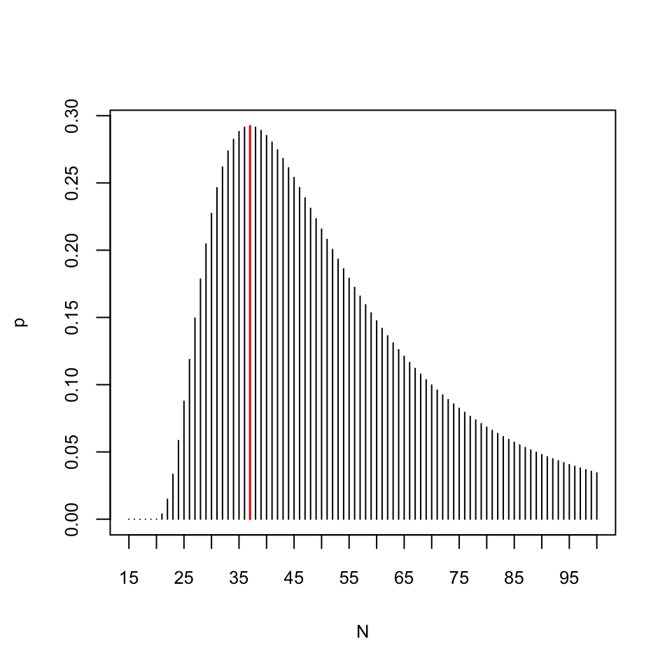
Un altre estimador per a \(N\) a partir de \(K\), \(n\) i \(k\) és l’estimador de Chapman: \[ \widehat{N}=\frac{(n+1)\cdot (K+1)}{k+1}-1 \]
La idea és que afegim a la població un individu extra i marcat, que suposam que també capturam a la segona mostra. Llavors, aplicam l’estimador anterior i finalment restam 1, per descomptar l’individu marcat extra que realment no pertany a la població que volem estimar.
En la situació de l’Exemple 1.15, aquest estimador dóna \[ \widehat{N}=\frac{16\cdot 11}{5}-1=34.2 \] i ens fa estimar una població total d’uns 34 peixos. Abans hem obtingut entre 37 i 38 peixos. Quina és la correcta? Ni idea, no ho podem saber, ja que no sabem si la proporció de peixos marcats a la segona captura reflecteix la global, o si els peixos marcats hi estan sobrerepresentats o sotarepresentats.
Resulta que l’estimador màxim versemblant \[ \widehat{N}=\frac{n\cdot K}{k} \] és esbiaixat, amb biaix que tendeix a 0 quan \(n\) tendeix a \(\infty\). L’estimador de Chapman és menys esbiaixat per a mostres petites, i no esbiaixat si \(K+n\geqslant N\) (però no és màxim versemblant).